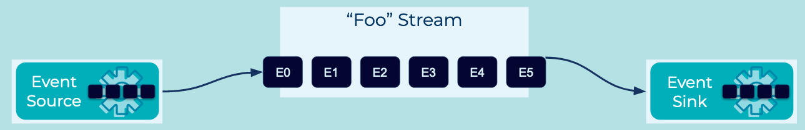

Event Stream
Event Processing Applications need to communicate, and ideally the communication is facilitated with Events. The applications need a standard mechanism to use for this communication.
Problem
How can Event Processors and applications communicate with each other, using event streaming?
Solution

Connect the Event Processing Applications with an Event Stream. Event Sources produce Events to the Event Stream, and Event Processors and Event Sinks consume them. Event Streams are named, allowing communication over a specific stream of Events. Note how Event Streams decouple the source and sink applications, which communicate indirectly and asynchronously with each other through events. Additionally, Event data formats are often validated in order to govern the communication between applications.
Generally speaking, an Event Stream records the history of what has happened in the world as a sequence of events (think: a sequence of facts). An example stream is a sales ledger or the sequence of moves in a chess match. This history is an ordered sequence or chain of events, so we know which event happened before another event to infer causality (e.g., “White moved the e2 pawn to e4, then Black moved the e7 pawn to e5”). A stream thus represents both the past and the present: as we go from today to tomorrow—or from one millisecond to the next—new events are constantly being appended to the history.
Technically, a stream provides immutable data. It supports only inserting (appending) new events, whereas existing events cannot be changed. Streams are persistent, durable, and fault tolerant. Events in a stream can be keyed, and we can have many events for one key, such as the customer ID as the key for a stream of payments of all customers.
Implementation
The streaming database ksqlDB supports Event Streams using a familiar SQL syntax. The following example creates a stream of events named riderLocations, representing locations of riders in a car-sharing service. The data format is JSON.
CREATE STREAM riderLocations (profileId VARCHAR, latitude DOUBLE, longitude DOUBLE)
WITH (kafka_topic='locations', value_format='json');
New Events can be written to the riderLocations stream using the INSERT syntax:
INSERT INTO riderLocations (profileId, latitude, longitude) VALUES ('c2309eec', 37.7877, -122.4205);
INSERT INTO riderLocations (profileId, latitude, longitude) VALUES ('18f4ea86', 37.3903, -122.0643);
INSERT INTO riderLocations (profileId, latitude, longitude) VALUES ('4ab5cbad', 37.3952, -122.0813);
INSERT INTO riderLocations (profileId, latitude, longitude) VALUES ('8b6eae59', 37.3944, -122.0813);
INSERT INTO riderLocations (profileId, latitude, longitude) VALUES ('4a7c7b41', 37.4049, -122.0822);
INSERT INTO riderLocations (profileId, latitude, longitude) VALUES ('4ddad000', 37.7857, -122.4011);
A push query a.k.a. a streaming query can be ran continuously over the stream using a SELECT, using the EMIT CHANGES clause. As new events arrive, this query will emit new results matching the WHERE conditionals. The following query looks for riders in close proximity to Mountain View, California, in the United States.
-- Mountain View lat, long: 37.4133, -122.1162
SELECT * FROM riderLocations
WHERE GEO_DISTANCE(latitude, longitude, 37.4133, -122.1162) <= 5
EMIT CHANGES;
References
-
This pattern is derived from Message Channel in Enterprise Integration Patterns by Gregor Hohpe and Bobby Woolf
-
The blog post series, Streams and Tables in Apache Kafka: A Primer goes into detail on streams, tables and other Kafka fundamentals.